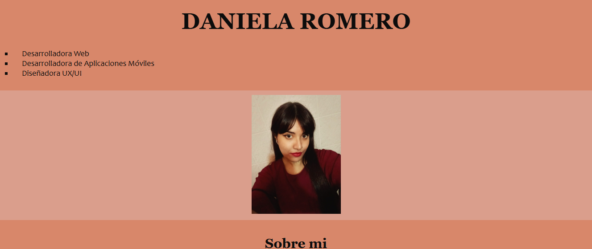
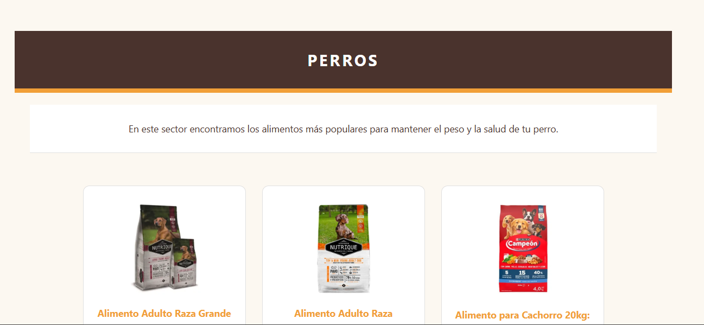

Portafolio de Proyectos
Una selección de soluciones digitales, aplicaciones web y proyectos móviles desarrollados bajo altos estándares de arquitectura, diseño de interfaz y rendimiento.
Una selección de soluciones digitales, aplicaciones web y proyectos móviles desarrollados bajo altos estándares de arquitectura, diseño de interfaz y rendimiento.
En este apartado podrás ver los trabajos que desarrollé en mi período de cursada que realicé de la diplomatura en desarrollo web en Fundaes durante el 2025-2026.
Este fue uno de mis primeros proyectos integradores, diseñado para consolidar y aplicar los conocimientos adquiridos a lo largo de mi formación. En él presento una visión estructurada de mi perfil profesional, abarcando desde mis datos de contacto y trayectoria laboral, hasta mi formación académica, habilidades técnicas y blandas, certificaciones, idiomas e intereses.

Plataforma web institucional y catálogo digital interactivo desarrollado para una boutique especializada en mascotas. Diseñado bajo estándares de arquitectura semántica HTML5 y enfocado en la experiencia de usuario (UX), el sitio ofrece una navegación fluida e intuitiva que permite explorar un catálogo organizado de productos de alta gama para perros y gatos. El proyecto integra un sistema de navegación optimizado por anclas, menús desplegables y una sección institucional orientada a comunicar la identidad, misión y valores de la marca con elegancia y claridad.

Plataforma web interactiva desarrollada para la exhibición y gestión dinámica de personajes icónicos. Diseñada bajo principios de maquetación semántica y diseño visual altamente adaptativo (responsive), la aplicación ofrece una experiencia inmersiva mediante tarjetas informativas combinadas con ambientaciones y fondos temáticos personalizados. El proyecto destaca por la implementación de una arquitectura de estilos CSS modular y por la integración de un módulo administrativo independiente para el registro de nuevos personajes mediante un formulario estructurado. Asimismo, prioriza el rendimiento web y la eficiencia en los tiempos de respuesta a través de la optimización y uso exclusivo de formatos multimedia de última generación (WebP).

Plataforma e-commerce e interfaz interactiva desarrollada para la comercialización de videojuegos, accesorios e indumentaria del ecosistema gamer. El proyecto combina un diseño moderno estructurado bajo maquetación semántica HTML5 con una experiencia de usuario (UX) ágil e intuitiva. Incorpora banners promocionales con llamadas a la acción (CTA) dinámicas, un catálogo organizado de títulos populares y productos estrella con información de precios y financiación, además de navegación por categorías. Destaca por el uso eficiente de iconografía vectorial (SVG) e imágenes de alta fidelidad optimizadas en formato WebP, garantizando un rendimiento fluido y una presentación visual atractiva.

Aplicación web dinámica de streaming e información audiovisual diseñada para la exploración interactiva de películas y series. Desarrollada con JavaScript moderno (ES6+), la plataforma consume una API REST mediante peticiones asíncronas (fetch) para renderizar de forma fluida el catálogo en el DOM. Incorpora un sistema de gestión de sesiones de usuario persistente mediante localStorage y navegación inteligente entre vistas utilizando URLSearchParams para el manejo de parámetros en URL. El proyecto resalta por una arquitectura frontend modular, una sólida gestión de eventos e integración limpia con interfaces maquetadas en HTML5 y CSS3.

Tienda web interactiva diseñada para ofrecer una experiencia de
compra fluida y dinámica. La plataforma se conecta en tiempo real a
un servidor de productos para mostrar un catálogo actualizado de
forma automática.
El sistema cuenta con dos secciones integradas: una tienda principal
donde el usuario puede explorar artículos y agregarlos al carrito de
forma instantánea, y una sección de compra dedicada donde es posible
ajustar cantidades, eliminar productos y visualizar el total
calculado al momento. Toda la información del usuario se conserva de
manera segura entre páginas para garantizar una navegación rápida,
confiable y sin interrupciones.